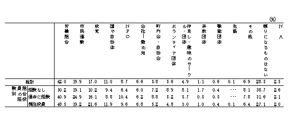
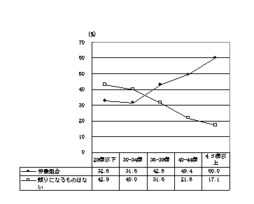
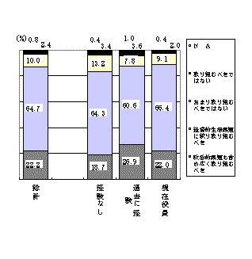
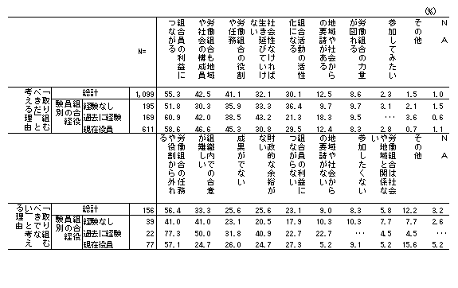
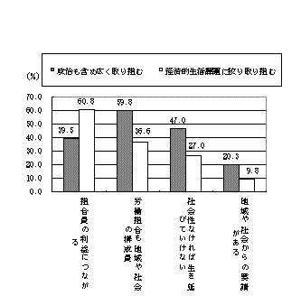
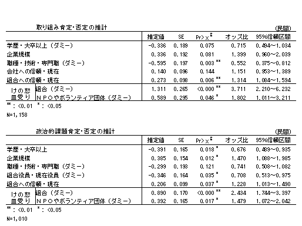

PDF版（208KB)もあります。
白石 利政（労働調査協議会・常務理事）
労働運動のバロメーターといわれる労働組合の組織率は19.6％（2003年）で、２割を割り込み過去最低を記録した。そして、昨今の常用雇用の減、パートタイム労働など非正規従業員の増は、労働組合の組織されている工場（事業所）の塀（建物）のなかにおける未組織労働者問題を顕在化させている。
石川（2003年）の企業内影響力調査（調査時期は1978年、1988年、2000年）では、①労働組合の人事関連事項、作業関連事項、労働関連事項への影響力は好不況にかなり左右され、不況期にはその影響力が抑制されていること、②同じ不況期でも2000年時点における影響力は1978年時点より低いこと、つまり「現在の不況の中で労働組合はオイルショック不況の頃よりも影響力が小さくなっている」ことが明らかにされている。
企業内における労働組合の空洞化が進んでおり、その再生が問われていることになるが、朝日新聞の2000年の社説、シリーズ世紀を築く・28（2000年１月30日）の見出しは、労働運動の再生、助け合いの原点に戻るであった。また『ひろばユニオン』（2003年４月号）の扉のことばでは、「労働運動が塀の中の組合活動（企業内）にひきこもり、社会運動としての側面をどんどん失ってきてしまった……労働問題を社会問題として今一度再生させねば、勤労者の未来は暗い」とのコメントがつけられている。
労働組合再生のためには、企業内組合活動に労働組合運動としての役割を取り戻すことの大切さを指摘する声は大きい。しかし、現在、産業・企業のリストラへの対応や組合員のニーズの多様化、組合財政悪化などのもとで、労働組合活動の「集中と選択」が進められ、社会的・国民的課題は見直しの対象となっている。
本稿では、必要性が強調される割には取り組みが進まない労働組合の社会・国民的課題への取り組みに焦点をあて、当面している課題を検討していくことにする。検討のために使用したデータは、（社）現代総合研究集団と法政大学大原社会問題研究所の共同調査「21世紀『労働組合に未来はあるか？』（2003年）」である。
労働組合が社会問題に取り組むことの大切さを示唆する結果は社会的怒りの受け皿についての回答に表れている。設問は、「あなたが、社会に怒りを持って声をあげたいとき、頼りになるのはどれですか」（複数回答。13項目プラス「頼りになるものはない」）である。
そのトップは「労働組合」（42％）であり、これは「市民運動」（20％）や「政党」（17％）、「国や自治体」（11％）を大きく引き離している。と同時に、「頼りになるものはない」（29％）にも少なくない回答が集っている点にも留意しておかなければならない。
この課題については、組合役員の経験別と年齢別で違いがみられる。現在役員層や40代以降では労働組合を挙げる人が半数を占めているものの、組合役員の経験なし層や34歳以下の青年層では「頼りになるものはない」が４割を占め、際立った違いをみせているからである。つまり、労働組合の社会問題に対する期待には、組合役員の経験の有無や35歳前後で、かなり明白な線が引けるということである（第１表、第１図）。
第１表 社会的怒りの受け皿

第１図 社会的怒りの受け皿

以上のことを踏まえて、労働組合の社会・国民的課題について調査結果を概観していくことにする。この共同調査では①労働組合が個別の企業内のみならず、広く社会的・国民的な課題に取り組むことについての是非と、②この取り組み＜肯定＞者からみた「取り組むべき」理由、および③取り組み＜否定＞者からみた「取り組むべきでない」理由、を尋ねている。
労働組合が広く社会的・国民的な課題へ取り組むことについては広く支持されている。第２図から明らかなように＜肯定＞は87％で、＜否定＞の12％との差は歴然としている。このことは組合役員の経験別にみても変わりはなく、＜肯定＞は組合役員の経験なし層でも８割を超え、過去に経験した人や現在役員層では９割近くにもなっている。
この＜肯定＞の内訳で注目される点は、「経済的生活課題に絞り取り組むべき」（経済問題限定派。65％）が「政治的課題も含め広く取り組むべき」（政治問題包含派。22％）を大きく上回っていることである。組合役員経験別でみても同様の結果が確認される。
つぎに、これらの取り組みの＜肯定＞と＜否定＞の理由を整理しておくことにする。
＜肯定＞（＝100％。９項目・複数回答）のトップは「組合員の利益につながる」（55％）である。これに「労働組合も地域や社会の構成員」（43％）や「労働組合の役割や任務だから」（41％）、「社会性がなければ生き延びていけない」（32％）といった組合活動の役割や社会性に関連した理由が挙げられている。組合役員の経験別では、現在組合役員層で組合活動の役割や社会性を、また経験なし層で組合活動活性化を、挙げる人が多い。
一方、全体では１割強と少ない＜否定＞（＝100％。９項目・複数回答）では、「労働組合の役割や任務から外れる」（56％）、「組織内での合意が難しい」（33％）などがその理由となっている（第２表）。
なお、第３図は組合の社会的・国民的取り組みを＜肯定＞している人の内訳別に理由を図示したものである（組合の活性化と組合の役割は、ともにそれぞれ３割、４割で差異が無いため掲示を省略した）。
政治的課題包含派は「労働組合も地域の構成員」（60％）や「社会性がなければ生き延びていけない」（47％）を挙げる人が多く、経済問題限定派をそれぞれ23ポイント、20ポイント引き離している。
第２図 労働組合の社会的・国民的課題への取り組みについて

第２表 労働組合が社会的・国民的な課題に取り組むことを＜肯定＞、＜否定＞する理由

第３図 労働組合の社会的・国民的課題取り組み＜肯定＞の内訳別にみた理由

これに対して、経済問題限定派は、「組合員の利益につながる」（61％）の多さが図抜けている。しかし、この経済問題限定派においても、「組合員の利益」のみを挙げ他の理由を全く挙げていない人は106人（13％）にとどまっており、「社会性がなければ生き延びていけない」と「労働組合も地域や社会の構成員」のいずれかを選んだ人は419人（51％）にもなる（図表省略）。
要約すれば、労働組合の社会的・国民的課題への取り組みは広く支持されていること、取り組みのスタンスは経済問題限定派が政治問題包含派を上回っているものの、経済問題限定派のなかにも、組合員の利益のみに固執している人は僅か１割でしかなく、地域や社会に目配りしている人が多く含まれている、ということになる。
以上、組合の社会的・国民的課題への取り組みについて紹介してきた。それでは、このような評価の生まれてくる背景はどのようになっているのであろうか。ここでは、対象を民間労組に絞り、①肯定・否定の違い、②肯定のなかでの政治的課題包含派と経済問題限定派の違い、をロジスティック回帰分析で推計してみることにする。
説明変数として取りだしたのは21変数である。その内訳は、男性（ダミー）、年齢（ダミー・29歳以下、30代前半、30代後半、40代前半、40代後半、50代前半）､学歴（ダミー・高卒、大卒以上）、業種（ダミー・製造業）、企業規模（１．10,000人未満、２．10,000人以上）、職種（ダミー・現業技能、事務営業、技術専門）、組合役員の経験（ダミー・経験なし、現在役員）、会社への信頼・現在（５.信頼している～１．信頼していない）、組合への信頼・現在（５.信頼している～１．信頼していない）、怒りの受け皿（ダミー・組合、ＮＰＯ＋ボランティア団体、市民・地域運動＋趣味などのサークル＋町内会）である。第３表は、有意水準を20％に設定し、ステップワイズ法で実行した推計結果である。
まず組合の社会的・国民的取り組みの＜肯定＞と＜否定＞を分けている要因を探ってみる。有意水準５パーセントでみると、21変数のなかから４つの変数が残り、各独立変数に対するオッズ比（その他の説明変数の条件が一定であると仮定した場合の値）の大きさに注目すると、社会的怒りの受け皿で組合やＮＰＯ・ボランティア団体などを挙げている人、及び労働組合を信頼している人では＜肯定＞との、これとは対照的に技術・専門職の人では＜否定＞との、相関が確認できる。
もうひとつの課題である、社会的・国民的取り組みを＜肯定＞している人のうち政治問題包含派と経済問題限定派を分けている要因については、同じく有意水準５パーセントでみると21変数のなかから６変数が残り、政治問題包含派は、先と同じく社会的怒りの受け皿で組合やＮＰＯ・ボランティア団体などを挙げている人、及び労働組合を信頼している人であり、これらに加えて大企業で働いている人で有意の相関が確認される。これに対し、経済問題限定派の支持層は大卒以上の高学歴層と現在組合役員をしている人であることがわかる。
このような推計結果を要約すると、労働組合の社会的・国民的取り組みには労働組合に対する信頼感や組合の役割への期待が影響していることがわかる。
また技術・専門職は組合の社会的・国民的取り組みに批判的であり、高学歴層は経済問題限定派が多いようである。これらには、社会や国民的課題への関心や視野の広さ、それらを組合ルートで改善しようという期待の強弱が影響しているのであろう。
さらに、大企業で働いている人は政治問題包含派と、そして現在組合役員層は経済問題限定派との相関がみられた。これには組合の社会的・国民的取り組みの現状が反映しているのではなかろうか。
組合の活動度は組合の規模による差が大きい。小規模組合ほど活動領域は狭くなる。この点については電機連合（2002）の「小さな大労組」研究の結果が参考になる。それによると、組合の取組課題（23項目）の実現度をもとに活動度を高・中・低の三つのグループに分けたさい、低グループに分類されたのは組合員数1,000人以上（70組合）では13％でしかないのに対し、500～999人（29組合）では35％、300～499（25組合）では44％、そして300人未満（38組合）では68％にも達している。労働組合の活動度が低くなればなるほど、労働組合の取り組みは個別企業内での賃金や労働諸条件に絞られ、社会的・国民的課題への取り組みは難しくなる。先の結果にはこのような現状が反映しているということであろう。
また現在組合役員層ほど経済問題限定派との相関がみられた。一般的には、組合の役割や活動についての理解の深い役員層の結果であるだけに奇異な感じがするが、これにも労働組合規模が影響しているようである。
現在組合役員の政治問題包含派の回答を企業規模別でみると、10,000人の31％に対し、5,000～9,999人では20％、3,000～4,999人では15％、1,000～2,999人では16％、999人以下では18％で、同じ現在組合役員層であっても、１万人以上とそれ未満とでは傾向的な差がみられる。
つまり、民間労組の組合役員で政治問題包含派の減・経済問題限定派の増は、１万人未満の組合役員の声をより強く反映した結果ということになる。これは、国政選挙や都道府県レベルの選挙で候補者を立てて積極的取り組んでいるのは「巨大」企業の労働組合であり、その他の規模の労働組合におけるこれらの課題への自粛、経済問題への限定が影響しているように思われる。労働組合の政治問題への取り組みが「選挙」活動などに狭く限定されているとしたら、組合員の政治的主張や社会的怒りの受け皿の役割を果たすためにも、見直しの時期にきている。
第３表 労働組合の社会的・国民的取り組み

連合（2002年）「21世紀社会保障ビジョン」の結びでは、「働く人々の暮らしに安心を保障する福祉・社会保障の将来を展望しようとすれば、個々の企業や家計の枠を越えた助け合いのネットワークを編み上げるほかない。それは、空疎で手垢にまみれ片隅に追いやられてきたかにみえる『社会連帯』という言葉の内実をもう一度建て直すことにつながっている。労働組合はその原点に立ち戻って、自らの組織、体質、行動を基礎から見直し、社会の中での存在を再確立することが切実に求められている。その行動に一人ひとりの組合員の自主的な参加を促し、それを通じて個々人が社会に生きる人間としての自覚と責任を自らのものとする道筋を示すことは，21世紀の労働組合の存在意義を問う試金石となっている」と謳っている。この呼びかけに応えるためにはどうしたらよいのであろうか。
この共同調査から、労働組合の社会的・国民的課題への取り組みを大半に人が支持しており、その支持のスタンスは経済問題限定派が多数であるが、そこにおいても地域や社会に配慮している人の多いことが明らかになっている。今後、この課題への取り組みを改善するに当たって、ここではつぎの二つの点を指摘しておきたい。
白石（2003）は、労働調査協議会「次代のユニオンリーダー調査」中の労働組合の社会的課題に関する四つの設問を検討して、社会的・国民的課題に思いを馳せている人は「会社・仕事人間」ではなく、仕事と生活のバランスを大切にし、組合メンバー以外の人にも思いやりの気持ちを持っている人、そして組合を信頼している人たちであることを指摘している。
参考資料
石川晃弘（2003年），「経済不況化における企業内影響力分布構造の変化」,社会科学第13号：中央大学文学部
朝日新聞・社説・シリーズ世紀を築く・28（2000年１月30日）
『ひろばユニオン』・扉のことば（2003年４月号）
（社）現代総合研究集団・法政大学大原社会問題研究所（2003年），21世紀「労働組合に未来はあるか？」：（社）現代総合研究集団
電機連合（2002），「小さな大労組」研究報告書：電機連合
連合（2002），連合「21世紀社会保障ビジョン」：日本労働組合総連合会
白石利政（2003），「労働組合の社会的活動について」，『労働調査』2003年６月号：労働調査協議会